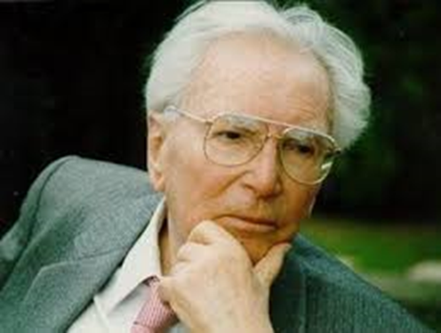
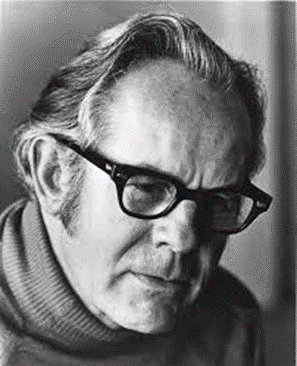
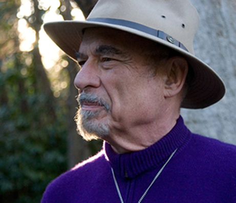

一、代表人物：Viktor Frankl（維克托・法蘭克
- 1905 年生於維也納，1944 年遭德國納粹遣送至集中營，並透過集中營的生活經驗，逐漸體悟罪惡感及生命有限等議題。1962 年，出版Man’s Search for Meaning 一書，向大眾闡述「意義治療法」的概念。
教育理念
- 生命的意義是一種哲學理念，其重要的三個基本信念為: 意志的自由、追求意義的意志，以及生命的意義。
- 認為當人對自己生命感到無意義時，其行為可能失去依據的力量，便可能產生「存在的挫折」，甚至衍生許多心理病症。由於人類最原始的動力就是「追求意義的意志」，因此當人處於「存在的挫折」時，可藉由意義治療或自我探索，尋回生活目標，重新生活。

二、代表人物：Rollo May（羅洛・梅）
- 生於俄亥俄州，後搬到密西根州。對記憶中的家庭生活感到不快樂，促使他對心理學和諮商的興趣。他前往維也納就學於Adler，在撰寫博士論文時罹患肺結核，並休養兩年。康復期間閱讀了有關焦慮的文獻，以其親身體驗和內心感悟出版著作。1949
年獲得哥倫比亞大學臨床心理學博士。
教育理念
- 人最真實的挑戰就是得在這個孤獨且終將面對死亡的世界中生存。
- 將治療目標放在幫助人們探索生活的意義，並且認為應該把焦點放在對存在問題的關注，例如學習處理「性」、「親密」、「衰老」、「死亡」等。
- 人指出治療者應幫助人找到能夠為社會福祉貢獻心力的生活方式。

三、代表人物：Irvin Yalom（歐文・亞隆）
- 亞隆在1931 年出生於華盛頓，目前仍擔任史丹佛大學精神病學榮譽教授，並持續在各地投入臨床治療工作，可說是現代精神醫學的大師，以及團體心理治療的權威，並與Frankl、May 等人合稱為存在主義治療的三大代表人物。
教育理念
- 發展出四個存在主義取向的終極關懷，分別是死亡、自由、存在的孤獨，以及無意義感；並且相信這四大關懷構成了存在性心理動力的核心。
- 認為覺察死亡和無存，可能會帶來憂慮或恐懼，但也可能會創造出更有意義的生活。
- 重視個別治療中彼此間的關係，認為建立良好的治療關係勝過於精確的技術運用。
四、主要概念
人性觀點
- 存在主義取向將治療實務的基礎放在對於「身為人類的意義」之探索(而 非 一套技術取向)。 對於人性本質的觀點:我們存在的意義從未固定，且永遠不會固定，我們 透過自己的想像不斷的創造自己。 類似問題: 「我是誰?」、「我過去是誰?
」、「我該何去何從? 」
存在主義人類狀態的基本層面
- 自我覺察的能力
自由、選擇與責任認知，構成自我覺察。 自我覺察的能力越強，我們自由的可能性越高。 自我覺察是大部分人類能力的基礎，因此決定拓展自我覺察是個人成長的要 件。 增進自我覺察是所有諮商的目標。 當覺察能力提升之後，想要回到過去的自我狀態就更加困難。
- 自由與責任
Schneider和Krug整理出存在主義三個概念:
1.人們能夠自由選擇自己想要成為的樣貌
2.人們有反思選擇背後之意義的能力
3.人們能夠執行自己所做的選擇
雖然我們渴望自由，我們卻常常藉由把自己定義成一個固定靜止的存在來逃避我們的自由，是為不接受個人責任的「不真誠」。
自由暗示著我們得對自己的人生負責，還得對我們的行動以及沒有採取行動負責。
存在的罪惡感就是覺察到自己選擇放棄決定權，了解到我們沒有成為自己原本的樣子，此罪惡感也可以成為自我轉化和真誠生活的動力來源。 真誠是指我們忠於自己的價值來生活，去發現對自己而言什麼才是最有價值的存在。
- 創造個人認同，建立有意義的人際關係
- 存在的勇氣
- 勇氣意味著向前邁進的意志力，即便在焦慮產生的情況下，勇氣的意志依舊。
- 當事人最大的恐懼之一就是發現自己沒有自我，有的只是他人期待的樣子。
- 勇氣意味著向前邁進的意志力，即藉由幫助當事人面對因空虛和無意義而生的恐懼，治療者可以協助當事人建立 一個擁有意義的自我。 便在焦慮產生的情況下，勇氣的意志依舊。
- 孤獨的經驗
- 當我們體認到除了自己之外，不能依賴任何人來肯定自己時，孤獨就產生了。
- 我們必須獨自賦予自己生命的意義，必須獨自決定自己應該如何過活。
- 如果我們孤獨的時候無法容忍自己，那我們如何能期待任何人因我們的相伴而感到充實。
- 關係的經驗
- 當我們能夠獨立自主，探索自身的內在力量，那麼和他人的關係就會建立在自 我實現上，而非自我剝奪。
- 如果我們感到個人存在受到剝奪，那麼我們就對這個關係不抱有什麼期待。
- 治療者幫助當事人去分辨他和別人的關係，是神經質依附，還是雙方都從中獲得生命的肯定關係。
- 和自我認同搏鬥
- 有些人為了逃避存在的體驗，而固著在特定的行為模式。
- 治療者會挑戰當事人去檢視他們用什麼方式放棄自我認同，特別是讓別人來規劃自己的生命。
- 治療者會促使當事人面對「他們必須獨自找到屬於自己的答案這個事實。」
- 追尋意義、目的、價值和目標
- 拋棄舊有價值的問題
- 當事人可能拋棄傳統的價值觀後，卻找不到其他可取代的新價值。 幫助當事人整合自己存在方式和自己的生活方式，並以此為基礎創造一種新的價值體系。(相信當事人的能力)
- 無意義感
- 無意義感是現代中，存在壓力和焦慮的主要來源，Frankl將存在精神官能症視為無意義感的經歷。 存在的虛無常發生在一些生命中沒有注定已設計好目標的人身上，因此這些人必須創造生命的意義。
- 創造新的意義
- 治療者不是直接告訴當事人生命的意義應該是什麼，而是點出即使遭受苦難，他們還是能在其中探索到意義。 我們越理性的追求意義，越可能與它失之交臂。意義的創造來自於一個仁和價值事物之間的約定，這樣的承諾提供生命的目的，讓人活得值得。
- 和自我認同搏鬥
- 有些人為了逃避存在的體驗，而固著在特定的行為模式。
- 治療者會挑戰當事人去檢視他們用什麼方式放棄自我認同，特別是讓別人來規 劃自己的生命。
- 治療者會促使當事人面對「他們必須獨自找到屬於自己的答案這個事實。」
- 焦慮是一種生活狀態
- 存在焦慮是當我們面對存在的事實(自由、選擇、孤獨、死亡)的結果。當我們決定 改變生命的方向，隨之而來的焦慮即意味著我們已準備好要迎向改變。正常焦慮是 面對事情的正常反應，不需要被抑制，因為它也可能成為改變和成長的動力，是通往自由的邀請。無法排除焦慮會導致神經質焦慮，它常常沒有被當事人覺察，卻使
其產生無力感。Deurzen相信存在焦慮是有自覺的活和活得完滿的一部分。 在當事人變得更自信時，因焦慮而產生的災難預期就會減少。
- 覺察死亡和無存
- 對於死亡狀態的覺察能夠提供生活的意義。與其被死亡恐懼給嚇傻，不如反思死亡的事實來督促自己充分生活。雖然物質上的死亡毀滅我們，覺察中的死亡卻拯救我們。克服死亡的恐懼是幫助當事人從虛偽的生活模式，轉換為真誠的生活模式的重要因素。害怕死亡的人也害怕生命，當我們坦然接受終將死亡的事實，便了解我們必須接下人生要如何度過的責任。
五、存在主義療程
目標
- 使當事人明白自己目前的處境
- 協助當事人選擇自己認為有意義的生活方式
- 使當事人對自己的選擇負責
- 協助當事人面對抉擇時的焦慮
六、存在主義治療的貢獻與限制
貢獻
- 重新將「人」放回治療的核心主體
- 將死亡視為正向力量的觀點
- 與其他諮商技巧結合，運用靈活
限制
- 缺乏系統性、明確性
- 過度強調自我決定
- 用語和概念太深奧